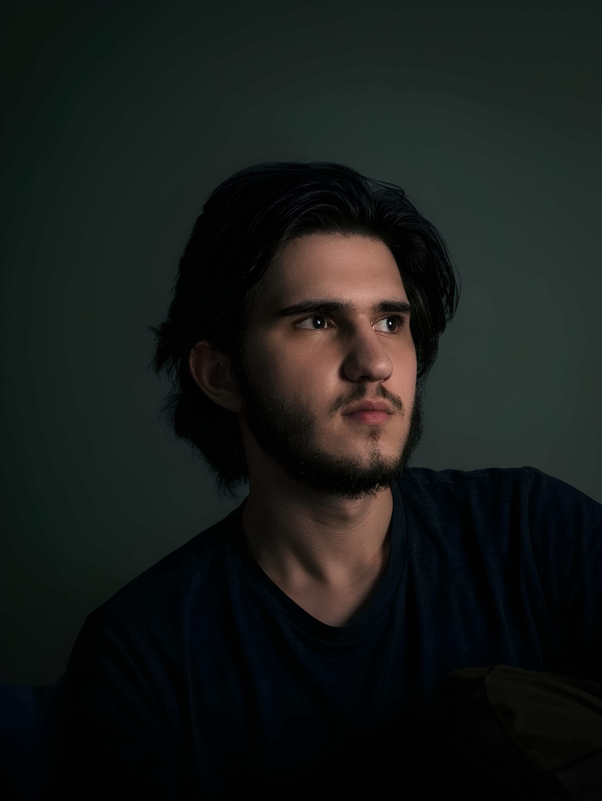

Расул Алиев
Создаю коммерчески успешные барные системы, связывая уникальную миксологию с экономикой и эргономикой заведения. Практический опыт в индустрии с 2020 года.
Начать сотрудничествоПрофессиональный путь: от помощника до инженера
Моя история в индустрии гостеприимства началась в 2020 году в кафе «Павлония». Это был жесткий и честный путь: я прошел через все должности, связанные с барной зоной — от помощника бариста, впитывающего азы, до старшего бариста и, наконец, шеф-бариста сети. Этот путь научил меня главному: понимать бар не только как «вкус», но и как сложный, живой механизм, который должен работать без сбоев.
Сегодня я не просто «варю кофе». Моя специализация — это **барный инжиниринг**. Я связываю органолептику напитков, уникальную миксологию, эргономику станции по принципу «одного шага» и финансовый учет в единую, эффективную систему. Моя цель — чтобы бар был быстрым, вкусным и приносил прибыль.
Вкус, за которым стоит система
Я строю меню по формуле: *«Инклюзивность для гостя + Операционная легкость для бариста + Высокая маржинальность для владельца»*.
Технология & Экономика Бара
Мой главный фокус — финансовая эффективность. Я провожу аудит операционных расходов, выявляю ненужные траты, оптимизирую закупки и создаю точные технологические карты с расчетом Food Cost. Это напрямую влияет на снижение себестоимости и **увеличение заработка кофейни с каждого напитка**.
Инклюзивная философия Вкуса
Я пропагандирую подход: *«Напиток для каждого»*. Мы создаем меню, затрагивающее максимальный спектр вкусов — от классики до острого, кислого, горячего или холодного. Наша цель — чтобы в баре нашел свое решение любой гость. Напитки должны быть легки в приготовлении и нести в себе высокие вкусовые качества.
Авторская Миксология
Увлекаюсь миксологией и постоянно экспериментирую с новыми сочетаниями, продуктами и гарнишами. Это мое хобби позволяет приносить в сферу барной работы что-то необычное и новое, находя интересные вкусовые выводы, которые мы интегрируем в наши меню и сезонные карты.
Мой подход к партнерству
Я не ищу «идеального клиента», но мне комфортно работать с людьми, которые уважают профессионализм и готовы к доверительному диалогу. Если вы готовы доверить профессионалу выстраивание системы бара (от подбора поставщиков и продукции до эргономики и продаж) и давать ему свободу действий — мы создадим уникальный и прибыльный продукт. С моей стороны — полная вовлеченность и экспертиза, с вашей — содействие и поддержка в реализации выработанной стратегии.